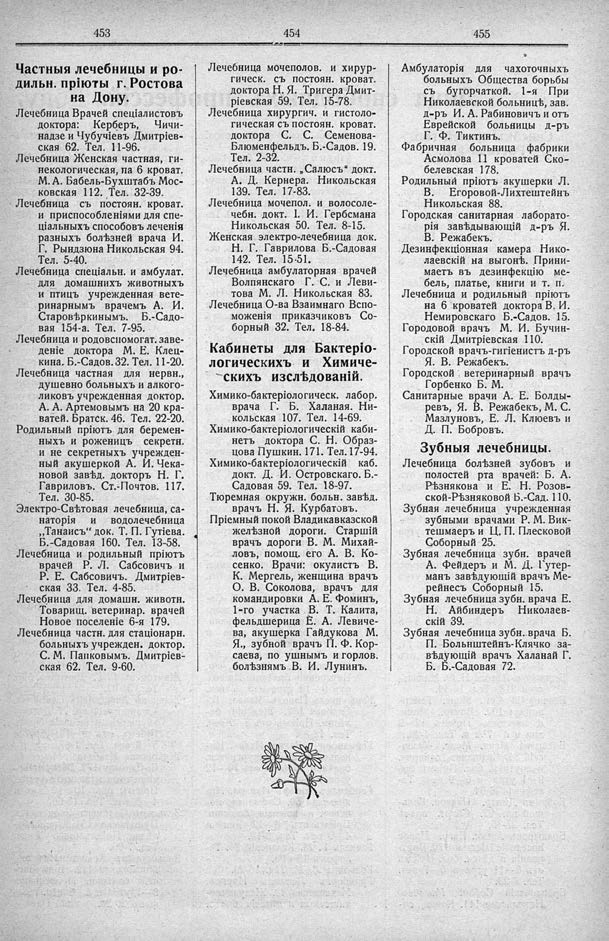

Лист источника 283
Скан

Распознанный текст
453
Частныя лечебницы и ро-
дильн. пріюты г. Ростова
на Дону.
Лечебница Врачей спеціалистовъ
доктора: Керберъ, Чичи-
надзе и Чубучіевъ Дмитріев-
ская 62. Тел. 11-96.
Лечебница Женская частная, ги-
некологическая, па 6 кроват.
М. А. Бабель-Бухштабъ Мос-
ковская 112. Тел. 32-39.
Лечебница съ постоян. кроват.
и приспособленіями для спе-
ціальныхъ способовъ леченія
разныхъ болѣзней врача И.
Г. Рындзюна Никольская 94.
Тел. 5-40.
Лечебница спеціальн. и амбулат.
для домашнихъ животныхъ
и птицъ учрежденная вете-
ринарнымъ врачемъ А. И.
Старовѣркинымъ. Б.-Садо-
вая 154-а. Тел. 7-95.
Лечебница и родовспомогат. заве-
деніе доктора М. Е. Клец-
кина. Б.-Садов. 32. Тел. 11-20.
Лечебница частная для нервн.,
душевно больныхъ и алкого-
ликовъ учрежденная доктор.
А. А. Артемовымъ на 20 кра-
ватей. Братск. 46. Тел. 22-20.
Родильный пріютъ для беремен-
ныхъ и роженицъ секретн.
и не секретныхъ учрежден-
ный акушеркой А. И. Чека-
новой завѣд. докторъ Н. Г.
Гавриловъ. Ст.-Почтов. 117.
Тел. 30-85.
Электро-Свѣтовая лечебница, са-
наторія и водолечебница
„Танаисъ“ док. Т. П. Гутіева.
Б.-Садовая 160. Тел. 13-58.
Лечебница и родильный пріютъ
врачей Р. Л. Сабсовичъ и
Р. Е. Сабсовичъ. Дмитріев-
ская 33. Тел. 4-85.
Лечебница для домашн. животн.
Товарищ. ветеринар. врачей
Новое поселеніе 6-я 179.
Лечебница частн. для стаціонарн.
больныхъ учрежден. доктор.
С. М. Панковымъ. Дмитріев-
ская 62. Тел. 9-60.
454
Лечебница мочеполов. и хирур-
гическ. съ постоян. кроват.
доктора Н. Я. Тригера Дмит-
ріевская 59. Тел. 15-78.
Лечебница хирургич. и гистоло-
гическая съ постоян. кроват.
доктора С. С. Семенова-
Блюменфельдъ. Б.-Садов. 19.
Тел. 2-32.
Лечебница частн. „Салюсъ“ докт.
А. Д. Кернера. Никольская
139. Тел. 17-83.
Лечебница мочепол. и волосоле-
чебн. докт. І. И. Гербсмана
Никольская 50. Тел. 8-15.
Женская электро-лечебница док.
Н. Г. Гаврилова Б.-Садовая
142. Тел. 15-51.
Лечебница амбулаторная врачей
Волпянскаго Г. С. и Леви-
това М. Л. Никольская 83.
Лечебница О-ва Взаимнаго Вспо-
моженія приказчиковъ Со-
борный 32. Тел. 18-84.
Кабинеты для Бактеріо-
логическихъ и Химиче-
скихъ изслѣдованій.
Химико-бактеріологическ. лабор.
врача Г. Б. Халаная. Ни-
кольская 107. Тел. 14-69.
Химико-бактеріологическій каби-
нетъ доктора С. Н. Образ-
цова Пушкин. 171. Тел. 17-94.
Химико-бактеріологическій каб.
докт. Д. И. Островскаго. Б.-
Садовая 59. Тел. 18-97.
Тюремная окружн. больн. завѣд.
врачъ Н. Я. Курбатовъ.
Пріемный покой Владикавказской
желѣзной дороги. Старшій
врачъ дороги В. М. Михай-
ловъ, помощ. его А. В. Ко-
сенко. Врачи: окулистъ В.
К. Мергель, женщина врачъ
О. В. Соколова, врачъ для
командировки А. Е. Фоминъ,
1-го участка В. Т. Калита,
фельдшерица Е. А. Левиче-
ва, акушерка Гайдукова М.
Я., зубной врачъ П. Ф. Кор-
саева, по ушнымъ и горлов.
болѣзнямъ В. И. Лунинъ.
455
Амбулаторія для чахоточныхъ
больныхъ Общества борьбы
съ бугорчаткой. 1-я При
Николаевской больницѣ, зав.
д-ръ И. А. Рабиновичъ и отъ
Еврейской больницы д-ръ
Г. Ф. Тиктинъ.
Фабричная больница фабрики
Асмолова 11 кроватей Ско-
белевская 178.
Родильный пріютъ акушерки Л.
В. Егоровой-Лихтештейнъ
Никольская 88.
Городская санитарная лаборато-
рія завѣдывающій д-ръ Я.
В. Режабекъ.
Дезинфекціонная камера Нико-
лаевскій на выгонѣ. Прини-
маетъ въ дезинфекцію ме-
бель, платье, книги и т. п.
Лечебница и родильный пріютъ
на 6 кроватей доктора В. И.
Немировскаго Б.-Садов. 15.
Городовой врачъ М. И. Бучин-
скій Дмитріевская 110.
Городской врачъ-гигіенистъ д-ръ
Я. В. Режабекъ.
Городской ветеринарный врачъ
Горбенко Б. М.
Санитарные врачи А. Е. Болды-
ревъ, Я. В. Режабекъ, М. С.
Мазлуновъ, Е. Л. Клюевъ и
Д. П. Бобровъ.
Зубныя лечебницы.
Лечебница болѣзней зубовъ и
полостей рта врачей: Б. А.
Рѣзнякова и Е. Н. Розов-
ской-Рѣзняковой Б.-Сад. 110.
Зубная лечебница учрежденная
зубными врачами Р. М. Вик-
тешмаеръ и Ц. П. Плесковой
Соборный 25.
Зубная лечебница зубн. врачей
А. Фейдеръ и М. Д. Гутер-
манъ завѣдующій врачъ Ме-
рейнесъ Соборный 15.
Зубная лечебница зубн. врача Е.
Н. Айбиндеръ Николаев-
скій 39.
Зубная лечебница зубн. врача Б.
П. Больнштейнъ-Клячко за-
вѣдующій врачъ Халанай Г.
Б. Б.-Садовая 72.